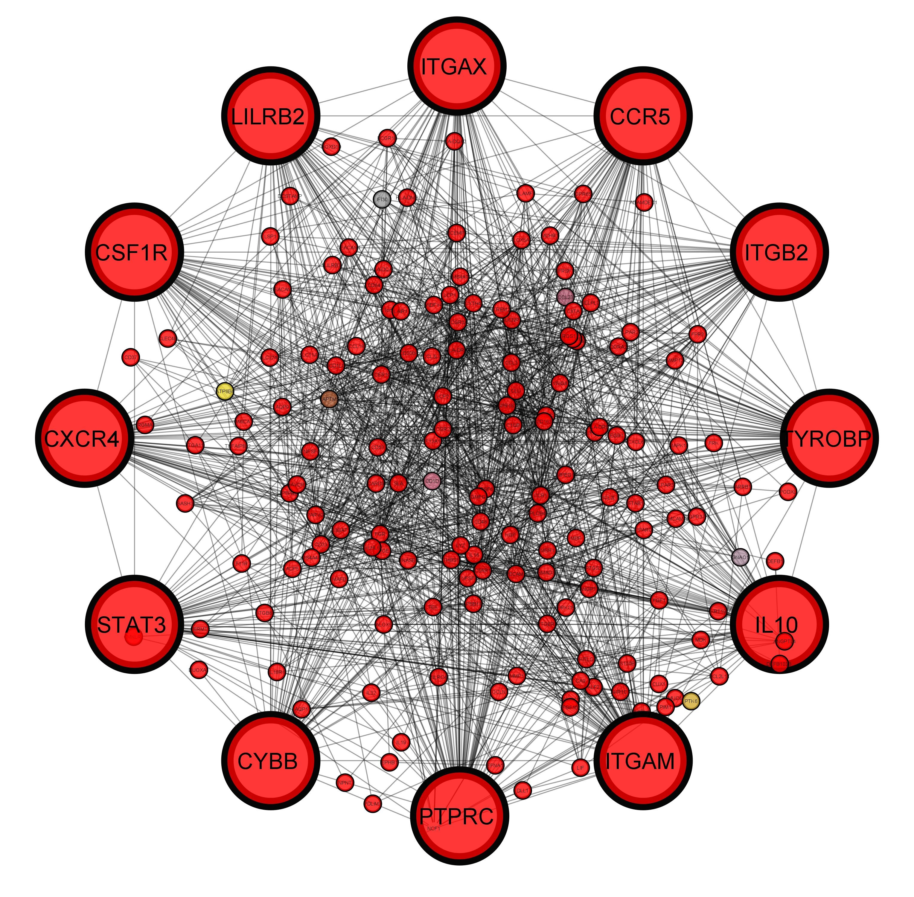
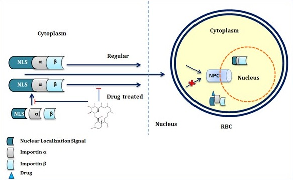
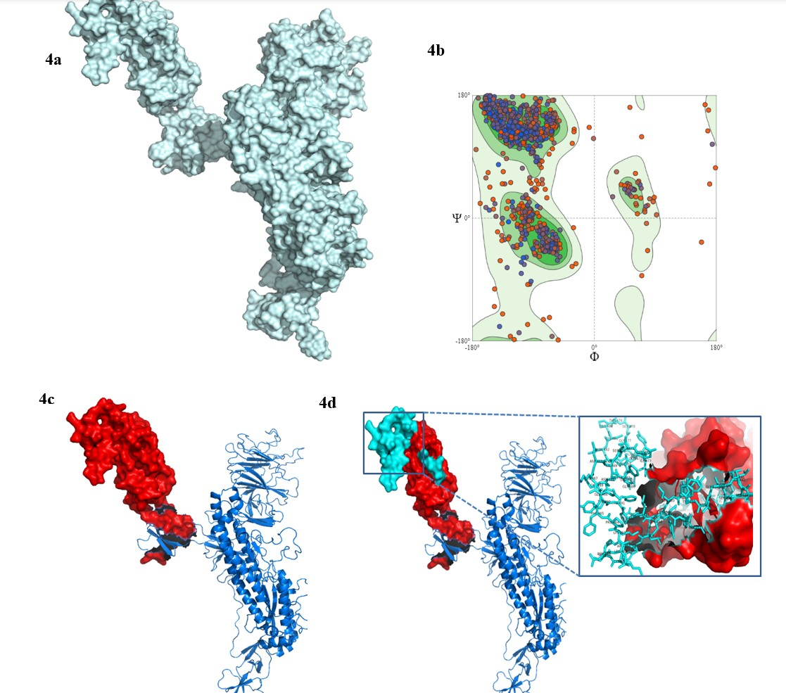
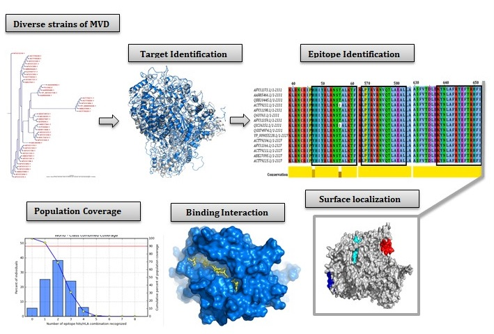

Updates
- March 2026: Selected to present at the Society of Toxicology (SOT) Annual Meeting in San Diego, CA, showcasing research on ferroptosis-based cancer therapeutics.
- March 2026: Awarded the CSS Dharm V. Singh Carcinogenesis Graduate Student Endowment Award (First Place, $750) from SOT for best abstract among global submissions.
- January 2026: Nominated as one of only eleven Texas A&M doctoral students to attend the Global Young Scientists Summit (GYSS), Singapore.
- November 2025: Received the RayBiotech Innovative Research Grant ($2500) supporting ongoing cancer research projects.
- October 2025: Presented at the AACR-NCI-EORTC International Conference in Boston, MA, on NR4A1/NR4A2-mediated ferroptosis mechanisms.
- 2025: Awarded multiple research and travel grants including AACR Scholar-in-Training Award, VMBS Graduate Research Trainee Grant, and GSA Travel Awards at Texas A&M University.
- 2024: Recognized as Graduate Student of the Year by the Department of Veterinary Physiology & Pharmacology, Texas A&M University.
About Me
I am a doctoral researcher in Biomedical Sciences at Texas A&M University, where my work focuses on uncovering novel therapeutic strategies for aggressive and drug-resistant cancers. My research centers on ferroptosis, an iron-dependent form of regulated cell death, and its potential to selectively target cancer cells that evade conventional treatments.
In the Molecular & Cellular Oncology Laboratory, I investigate the mechanistic role of nuclear receptor signaling pathways—particularly the NR4A1/NR4A2–SP1–CD71 axis—in regulating iron metabolism, oxidative stress, and ferroptotic sensitivity. My work integrates molecular biology, redox biology, and translational pharmacology to develop innovative cancer therapeutics.
Prior to my PhD, I completed my graduate studies in Biotechnology and Genetic Engineering, where I conducted research on bacteriophages targeting multidrug-resistant pathogens and explored protein function prediction using computational approaches. These experiences shaped my interdisciplinary perspective, bridging microbiology, computational biology, and cancer research.
I am deeply committed to advancing translational science, mentoring emerging researchers, and contributing to collaborative, high-impact research environments. My long-term goal is to lead an independent research program focused on developing precision therapeutics for complex diseases.
Skills
To be updatd...
Laboratory skills
Resume
Education
Texas A&M University, College Station, TX
Aug 2023 – Present
Advisor: Prof. Stephen Safe
Research Focus: Ferroptosis and cancer therapeutics
Mawlana Bhashani Science and Technology University, Bangladesh
Jan 2014 – Oct 2016
Advisor: Dr. Kaiser Ali Talukder (icddr,b)
Thesis: Isolation and molecular characterization of bacteriophages
Mawlana Bhashani Science and Technology University, Bangladesh
Jan 2010 – Jan 2014
Advisor: Dr. Shah Adil Ishtiyaq Ahmad
Thesis: Cold-shock protein prediction in Alteromonas macleodii
Research Interests
Cancer biology, ferroptosis, drug discovery, redox biology, and computational biology.
Research Experience
Texas A&M University, College Station, TX
Jan 2024 – Present
Advisor: Prof. Stephen Safe
- Investigating ferroptosis mechanisms in drug-resistant cancers.
- Studying NR4A–SP1–CD71 signaling in iron metabolism and oxidative stress.
- Performing molecular and cellular oncology experiments.
- Contributing to manuscripts, grants, and mentorship activities.
Texas A&M University, College Station, TX
Aug 2023 – Dec 2023
Advisor: Prof. Sanjay Reddy
- Worked on vaccine development for Marek’s disease virus.
- Performed cloning, antigen design, and vector construction.
icddr,b, Bangladesh
Oct 2015 – Nov 2016
Advisor: Dr. Kaiser Ali Talukder
- Isolated bacteriophages targeting multidrug-resistant Shigella flexneri.
- Performed environmental sampling and host-range characterization.
- Identified lytic phages with therapeutic potential.
Professional Experience
Aristopharma Ltd., Bangladesh
Mar 2021 – Aug 2022
- Led method validation under WHO GMP and ISO standards.
- Developed and updated SOPs ensuring regulatory compliance.
Aristopharma Ltd., Bangladesh
Jan 2019 – Mar 2021
- Performed quality analysis of raw materials and finished products under USP, BP, EP standards.
Aristopharma Ltd., Bangladesh
Nov 2016 – Jan 2019
- Conducted routine and batch-wise pharmaceutical QC testing.
Publications (Peer-reviewed)
🌐 Google Scholar |
🌐 NCBI Bibliography
Total Citation: 470 |
h-Index: 13 |
i10-index: 14
Manuscript Submitted / Ready for submission
[1]
Oany A.R., Upadhyay S., Farkas E., Sivaram G., Tsui W.N.T., Hailemariam A., Safe S. (2026).
Orphan Nuclear Receptor 4A (NR4A) Ligands Induce Ferroptosis and Enhance Immune Function in Colon Cancer.
(Submitted in Experimental & Molecular Medicine).
Manuscript Published
[1]
Hailemariam A., Upadhyay S., Oany A.R., Tsui W.N.T., Srivastava V., Sivaram G., Churion K., Chapkin R.S., Davidson L.A., Eitan S., Cai J.J., Norton R., Safe S. (2026).
Brewed Coffee and its Components Act Through Orphan Nuclear Receptor 4A1 (NR4A1).
(Nutrients), 18(6), 877. (Impact Factor: 5.0)
DOI: 10.3390/nu18060877
[2]
Oany, A.R., Upadhyay, S., Tsui, W.N.T., Hailemariam, A., Latka, S., Landua, J.D., Scherer, S.D., Welm, A.L., Villanueva, H., Lewis, M.T., Safe, S. (2025).
Orphan nuclear receptor 4A1 (NR4A1) and NR4A2 are endogenous regulators of CD71 and their ligands induce ferroptosis in breast cancer.
(Cell Death & Disease), 16(1), p.776. (Impact Factor: 9.6)
DOI: 10.1038/s41419-025-08143-5
[3]
Oany A.R., Srijana Upadhyay, Stephen Safe (2025).
Dual NR4A1/2 ligands inhibit rhabdomyosarcoma cell growth and trigger ferroptosis by activating CD71.
[Abstract]. In: Proceedings of the AACR-NCI-EORTC International Conference on Molecular Targets and Cancer Therapeutics; 2025 Oct 22–26; Boston, MA. Philadelphia (PA): AACR; Mol Cancer Ther 2025;24(10 Suppl): Abstract nr C074.
DOI: 10.1158/1535-7163.TARG-25-C074
[4]
Tsui, W.N.T., Park, Y., Upadhyay, S., Kim, D.M., Zhang, L., Wright, G., Hailemariam, A., Oany, A.R., Han, S.J., Safe, S. (2025).
Dual Targeting of Orphan Nuclear Receptors NR4A1 and NR4A2 for Nonhormonal Endometriosis Therapy.
Endocrinology, 166(11), p.bqaf144. (Impact Factor: 3.3)
DOI: 10.1210/endocr/bqaf144
[5]
Safe, S., Oany, A.R., Tsui, W.N., Lee, M., Srivastava, V., Upadhyay, S., Hailemariam, A., Farkas, E., Kakwan, S., Kearns, C., Sivaram, G. (2025).
Orphan nuclear receptor transcription factors as drug targets.
Transcription, 16(2–3), pp.224–260. (Impact Factor: 4.4)
DOI: 10.1080/21541264.2025.2521766
[6]
Hailemariam, A., Upadhyay, S., Srivastava, V., Hafiz, Z., Zhang, L., Tsui, W.N.T., Oany, A.R., Rivera-Rodriguez, J., Chapkin, R.S., Riddell, N., McCrindle, R. (2025).
Perfluorooctane Sulfonate (PFOS) and Related Compounds Induce Nuclear Receptor 4A1 (NR4A1)-Dependent Carcinogenesis.
Chemical Research in Toxicology, 38(4), pp.705–716. (Impact Factor: 3.8)
DOI: 10.1021/acs.chemrestox.4c00528
[7]
Safe, S., Farkas, E., Hailemariam, A.E., Oany, A.R., Sivaram, G., Tsui, W.N.T. (2025).
Activation of Genes by Nuclear Receptor/Specificity Protein (Sp) Interactions in Cancer.
Cancers, 17(2), p.284. (Impact Factor: 4.4)
DOI: 10.3390/cancers17020284
[8]
Upadhyay, S., Lee, M., Zhang, L., Oany, A.R., Mikheeva, S.A., Mikheev, A.M., Rostomily, R.C., Safe, S. (2025).
Dual nuclear receptor 4A1 (NR4A1/NR4A2) ligands inhibit glioblastoma growth and target TWIST1.
Molecular Pharmacology, 107(2), p.100009. (Impact Factor: 3.2)
DOI: 10.1016/j.molpha.2024.100009
[9]
Mia, M.; Oany A.R.; Pervin, T. (2024).
Deciphering novel molecular gene expression signatures and pathways in cystic fibrosis through integrative bioinformatics strategies.
Gene & Protein in Disease, 3(2), 2937.
DOI: 10.36922/gpd.2937
[10]
Oany A.R.; Mia, M.; Pervin, T.; Alyami, S.A.; Moni, M.A. (2021).
Integrative Systems Biology Approaches to Identify Potential Biomarkers and Pathways of Cervical Cancer.
Journal of Personalized Medicine, 11, 363.
DOI: 10.3390/jpm11050363
[11]
Oany A.R., Pervin, T., Moni, M.A. (2021).
Pharmacoinformatics-based elucidation and designing of potential inhibitors against Plasmodium falciparum to target importin alpha/beta mediated nuclear importation.
Infection, Genetics and Evolution, 88, p.104699. (Impact Factor: 2.6)
DOI: 10.1016/j.meegid.2020.104699
[12]
Pervin, T., Oany A.R. (2021).
Vaccinomics approach for scheming potential epitope-based peptide vaccine by targeting l-protein of Marburg virus.
In Silico Pharmacology, 9(1), pp.1–18.
DOI: 10.1007/s40203-021-00080-3
[13]
Oany A.R., Mia, M., Pervin, T., Junaid, M., Hosen, S.Z., Moni, M.A. (2020).
Design of novel viral attachment inhibitors of the spike glycoprotein (S) of severe acute respiratory syndrome coronavirus-2 (SARS-CoV-2) through virtual screening and dynamics.
International Journal of Antimicrobial Agents, 56(6), p.106177. (Impact Factor: 4.9)
DOI: 10.1016/j.ijantimicag.2020.106177
[14]
Oany A.R., Pervin, T., Mia, M., et al. (2017).
Vaccinomics approach for designing potential peptide vaccine by targeting Shigella Spp. serine protease autotransporter (SPATE) subfamily protein, SigA.
Journal of Immunology Research, 14. (Impact Factor: 3.5)
DOI: 10.1155/2017/6412353
[15]
Hossain M.U., Omar T.M., Oany A.R., Kibria K.K., Shibly A.Z., Moniruzzaman M., Ali S.R., Islam M.M. (2018).
Design of peptide-based epitope vaccine and further binding site scrutiny led to groundswell in drug discovery against Lassa virus.
3 Biotech, 8(2):81. (Impact Factor: 2.6)
DOI: 10.1007/s13205-018-1106-5
[16]
Oany A.R., Emran A.A., Jyoti T.P. (2014).
Design of an epitope-based peptide vaccine against spike protein of human coronavirus: an in silico approach.
Drug Design, Development and Therapy, 8, 1139. (Impact Factor: 4.7)
DOI: 10.2147/DDDT.S67861
[17]
Kibria K.K., Hossain M.U., Oany A.R., Ahmad S.A. (2016).
Novel insights on ENTH domain-containing proteins in apicomplexan parasites.
Parasitology Research, 115, 2191. (Impact Factor: 1.8)
DOI: 10.1007/s00436-016-4961-1
[18]
Hossain M.U., Oany A.R., Ahmad S.A., Hasan M.A., Khan M.A., Siddaki M.A. (2016).
Identification of potential inhibitor and enzyme-inhibitor complex on trypanothione reductase to control Chagas disease.
Computational Biology and Chemistry, 65, 29. (Impact Factor: 2.6)
DOI: 10.1016/j.compbiolchem.2016.10.002
[19]
Oany A.R., Hossain M.U., Islam R., Emran A.A. (2016).
A preliminary evaluation of cytotoxicity, antihyperglycemic and antinociceptive activity of Polygonum hydropiper L. ethanolic leaf extracts.
Clinical Phytoscience, 2, 1–6.
DOI: 10.1186/s40816-016-0016-5
[20]
Oany A.R., Sharmin T., Chowdhury A.S., Jyoti T.P., Hasan M.A. (2015).
Highly conserved regions in Ebola virus RNA dependent RNA polymerase may act as a universal novel peptide vaccine target: a computational approach.
In Silico Pharmacology, 3, 1–13.
DOI: 10.1186/s40203-015-0011-4
[21]
Oany A.R., Jyoti T.P., Ahmad S.A. (2014).
An in silico approach for characterization of an aminoglycoside antibiotic resistant methyltransferase protein from Pyrococcus furiosus (DSM 3638).
Bioinformatics and Biology Insights, 8, 65–72.
DOI: 10.4137/BBI.S146
[22]
Oany A.R., Ahmad S.A., Kibria K.K., Hossain M.U., Jyoti T.P. (2014).
A hypothetical protein of Alteromonas macleodii AltDE1 (amad1_06475) predicted to be a cold-shock protein with RNA chaperone activity.
Gene Regulation and Systems Biology, 8, 141.
DOI: 10.4137/GRSB.S20802
[23]
Oany A.R., Ahmed M.S., Jahan N., Latif M.A., Mahmud S., Hossain M.A., Akter F., Rakib H.H., Islam M.S. (2015).
Homology modeling and assigned functional annotation of an uncharacterized antitoxin protein from Streptomyces xinghaiensis.
Bioinformation, 11(11), 493.
DOI: 10.6026/97320630011493
[24]
Oany A.R., Ahmad S.A., Hossain M.U., Jyoti T.P. (2015).
Identification of highly conserved regions in L-segment of Crimean–Congo hemorrhagic fever virus and immunoinformatic prediction about potential novel vaccine.
Advances and Applications in Bioinformatics and Chemistry, 8, 1–10.
DOI: 10.2147/AABC.S75250
[25]
Oany A.R., Hossain M.U., Ahmad S.A.I. (2015).
Computational approach to design a potential siRNA molecule to silence the nucleocapsid gene of different Nipah virus strains of Bangladesh.
Bioresearch Communications (BRC), 1(1), 40–44.
DOI: Link
Research Highlights




My Photography


{kind=link}
{kind=link}
{kind=link}
Achievements
Honors and Awards
-
Graduate Student Travel Support ($900)
To present at SOT Annual Meeting 2026
Organization: Society of Toxicology (SOT)
Date: March 2026, San Diego, CA -
CSS Dharm V. Singh Carcinogenesis Graduate Student Endowment Award (First Place, $750)
Selected from 94 global applications based on best abstract
Organization: Society of Toxicology (SOT)
Date: March 2026, San Diego, CA -
Global Young Scientists Summit (GYSS) Nominee
Selected as one of only eleven Texas A&M doctoral students
Participated alongside Nobel Laureates and global research leaders
Organization: Texas A&M University & National Research Foundation, Singapore
Date: January 2026
View Details -
RayBiotech Innovative Research Grant ($2500)
Selected from 80+ applicants across U.S. research institutions
Organization: RayBiotech
Date: November 2025
View Details -
Scholar-in-Training Award ($750)
Conference support (Boston, MA, 2025)
Organization: American Association for Cancer Research (AACR)
Date: September 2025 -
Graduate Student Research Trainee Grant ($5000)
Organization: VMBS, Texas A&M University
Date: September 2025 -
Graduate Student Advanced Developmental Training Grant ($1250)
Attended Best of ASCO Minneapolis 2025
Organization: VMBS, Texas A&M University
Date: March 2025 -
Graduate Student Association (GSA) Travel Award ($1000)
AACR-NCI-EORTC Conference, Boston, MA
Organization: VMBS, Texas A&M University
Date: October 2025 -
Proteintech Product Grant ($1000)
Awarded among 25 selected projects
Organization: Proteintech Group, USA
Date: March 2025
View Details -
Best Poster Award ($750)
Organization: Texas A&M Center for Environmental Research (TiCER)
Date: Spring 2025 -
CIRTL Associate Fellow (Academy for Future Faculty)
Completed year-long teaching and mentorship program
Organization: Texas A&M University
Date: Spring 2025
View Credential -
Judge Certificate
Student Research Week 2025
Organization: Texas A&M University
Date: Spring 2025 -
Graduate Student Association (GSA) Travel Award ($1000)
Cancer and Metabolism Conference (Abcam), Austin, TX
Organization: VMBS, Texas A&M University
Date: Spring 2025 -
Graduate Student of the Year Award
Recognized for outstanding research achievement
Organization: Department of Veterinary Physiology & Pharmacology, Texas A&M University
Date: December 2024 -
Walter W. Lechner Estate Scholar
Organization: Texas A&M University
Date: 2023–2024 Academic Year -
Bangladesh Sweden Trust Fund Travel Award
Awarded for study abroad excellence
Organization: Bangladesh Sweden Trust Fund
Date: 2023–2024 Academic Year -
VMBS International Photo Contest – First Prize (Category D: Experiencing Aggieland)
Organization: VMBS, Texas A&M University
Date: 2024 Academic Year
Training and Workshop
Name: Biosafety and Biosecurity
Organized by: Biosafety division, ICDDR, B
Dated 13-15 October, 2015.
Name: Basic Biotechnology
Organized by: National Institute of Biotechnology (NIB), Bangladesh
Dated 24-28 November, 2013.
Name: Medical Waste Management in Bangladesh
Organized by: Dr. Natasha K. Griffith, Former Director, High Containment Facilities Responsible officials (RO), University of California Los Angeles, USA.
Held in: ICDDR, B.
Dated 24th October, 2015.
Name: ASM Virtual Workshop on Scientific Writing and Publishing
Organized by: Dr. Firdausi Qadri, ASM Ambassador to Bangladesh.
Held in: ICDDR, B.
Dated 4th August 2015.
Invited Talk
-
Veterinary Physiology & Pharmacology (VTPP) Departmental Seminar
Title: “Orphan Nuclear Receptor 4A1 (NR4A1) and NR4A2 are Endogenous Regulators of CD71 and Their Ligands Induce Ferroptosis in Breast Cancer”
Hosted by: Veterinary Medicine & Biomedical Sciences (VMBS), Texas A&M University, College Station, TX, USA
Date: October 2025
Conference & Symposium Presentations
Oral Presentation
-
“Dual NR4A1/2 ligands inhibit breast cancer cell growth and trigger ferroptosis by activating CD71”
Organized by: Student Research Week 2026, Texas A&M University, College Station, TX, USA
Date: March 16–20, 2026
Poster Presentations
-
“Dual NR4A1 and NR4A2 Ligands Promote Ferroptosis and Inhibit Rhabdomyosarcoma Growth through CD71 Activation”
Event: Society of Toxicology (SOT) Annual Meeting
Location: San Diego, CA
Date: March 22–25, 2026 -
“Dual NR4A1/2 Ligands Trigger Ferroptosis by Inhibiting GPX4 in Colorectal Cancer Cells”
Event: Global Young Scientists Summit (GYSS26)
Location: Singapore
Date: January 5–10, 2026 -
“Dual NR4A1/2 ligands inhibit rhabdomyosarcoma cell growth and trigger ferroptosis by activating CD71”
Event: AACR-NCI-EORTC International Conference on Molecular Targets and Cancer Therapeutics
Location: Boston, MA
Date: October 22–26, 2025 -
“Dual NR4A1/2 ligands inhibit breast cancer cell growth and trigger ferroptosis by activating CD71”
Hosted by: Texas A&M Center for Environmental Health Research (TiCER)
Location: College Station, TX
Date: 2025 -
“Dual NR4A1/2 ligands inhibit breast cancer cell growth and trigger ferroptosis by activating transferrin receptor (CD71)”
Conference: Cancer and Metabolism (Abcam)
Location: Austin, TX
Date: 2025 -
“Orphan Nuclear Receptor 4A1 (NR4A1) and NR4A2 are Endogenous Regulators of CD71 and Their Ligands Induce Ferroptosis in Breast Cancer”
Hosted by: Texas A&M University Regional Center of Excellence in Cancer Research (TREC)
Date: 2025
Memberships
Reviewer Certificates
Peer reviewer of the few journals of Elsevier, Springer, and others.
# Web of Science™ Peer Reviewer Profile (Link)


Testimonials
To be updated.....
---
---
---
---
--
--
--
--
--
--
CV
To be updated......
Location:
College Station, Texas-77840
Email:
arafatr@outlook.com